Multi-Hazard Resilient Structures Lab
Finite Element and Parametric Analysis of Protected Wall Assemblies Under Fire
In July 2025, Johns Hopkins researchers conducted a post-earthquake fire test on a 10-story building made from cold-formed steel, using a nationally-regulated shake table in San Diego. This research filled a gap in the vital lack of data on the fire performance of full-scale cold-formed steel buildings exposed to realistic fire, especially after hazards like an earthquake.
Two fires were started at the 6th (L6) and 9th (L9) floors of the building. Thermocouples to measure temperature over time were attached to cold-formed steel structural members, which included studs (internal) and gypsum layers (exposed to fire layer). Additionally, temperatures of the L6 and L9 compartments were recorded to determine the gas temperatures over time. Thermocouples were also placed on the hot and cold flanges of the stud.
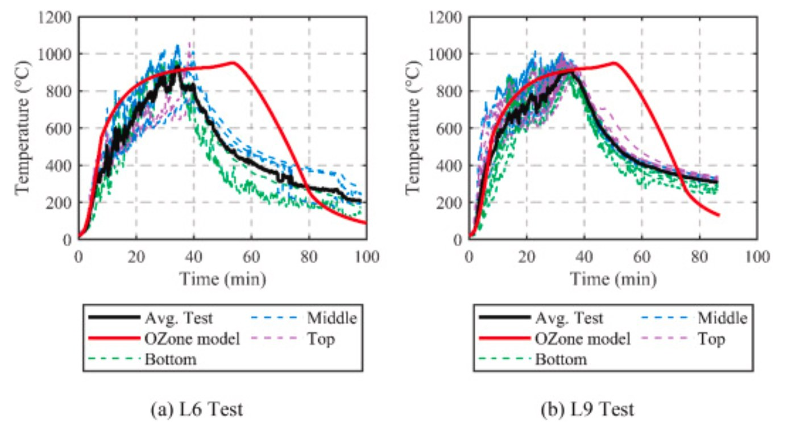
I was tasked with reproducing the finite element modeling for the series of studs protected by gypsum during the fire test. This assembly represents the wall framing for the room. The software I used is SAFIR, a finite element package developed in-house by my PI (Dr. Thomas Gernay) during his PhD.
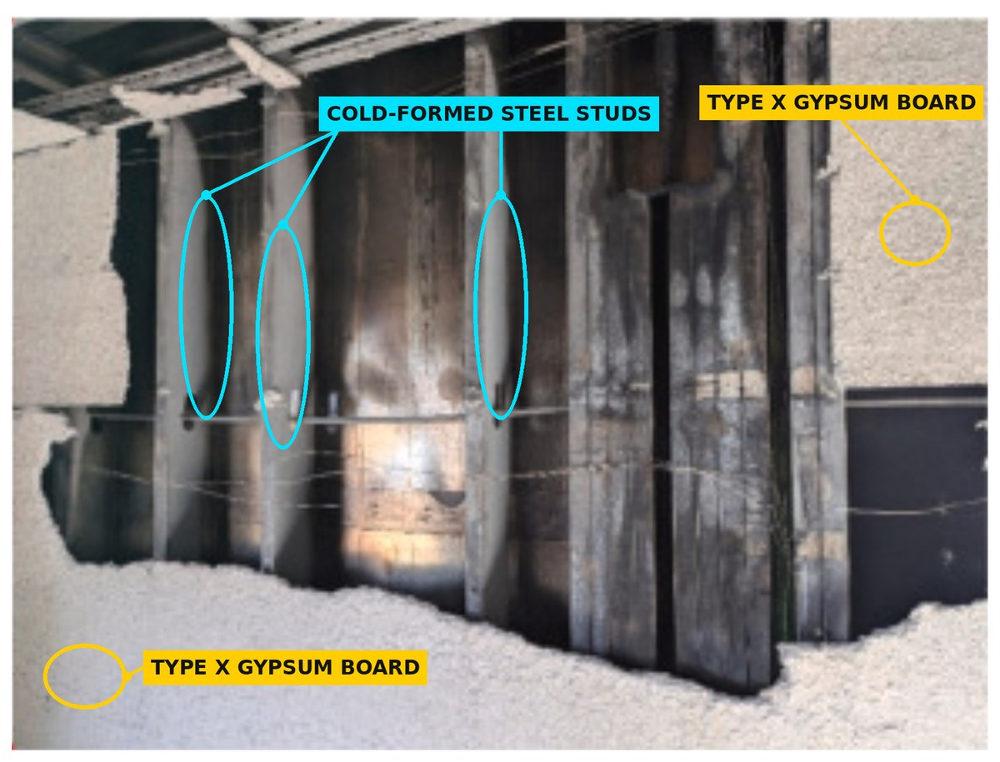
In the pre-processing interface, I began by designing the stud and two gypsum supports on the flanges of the stud based on the measurements set in the experiment. Thermal properties for cold-formed steel and gypsum (Gypsum X) are known, so I assigned them to each surface that represents the gypsum or stud.
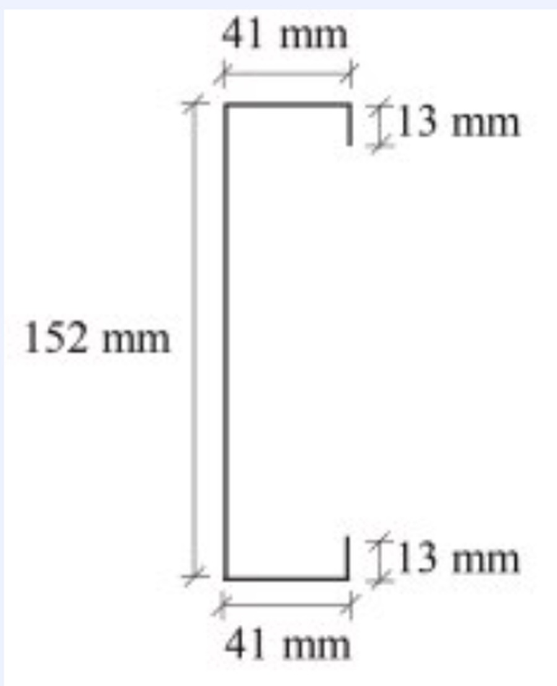
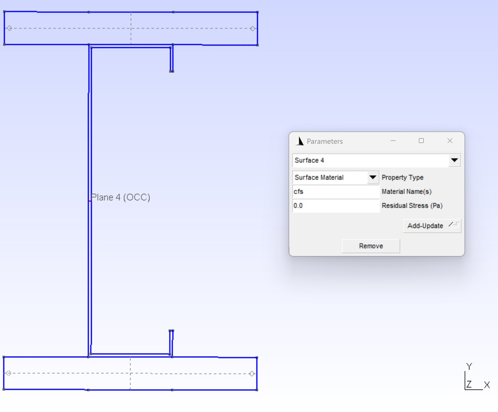
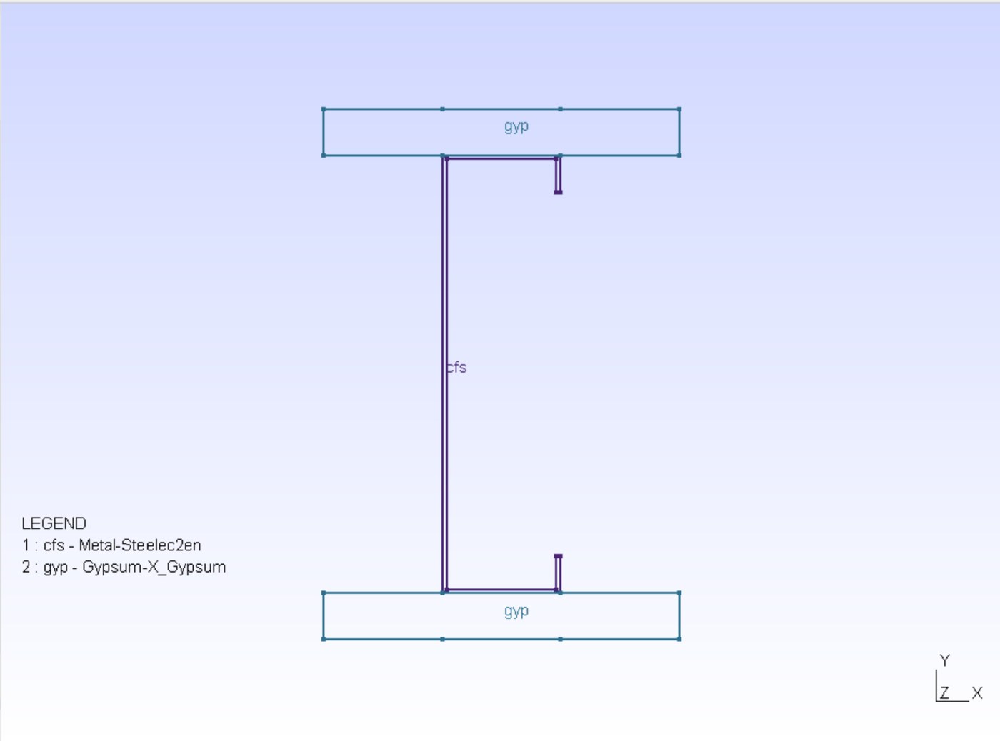
Next, I need to define the exposed and unexposed fire frontiers. In these rooms, the walls have three layers: the surface layer is the first gypsum board, the middle layer is the stud, and the final internal layer is a gypsum board. Since the final gypsum board is internal to the wall, it is entirely unexposed to the fire and carries a temperature curve of F20 (meaning a constant temperature of 20 C).
The first gypsum board is fully exposed to the fire and carries a curve that represents the change in gas temperature over time. This is because the change in temperature moving from the hot to cold front is represented by the flux equation, which depends on gas temperature. Surface temperature is an unknown determined by SAFIR based on how well the structure conducts heat: the greater the insulation, the closer the surface temperature is to the gas.
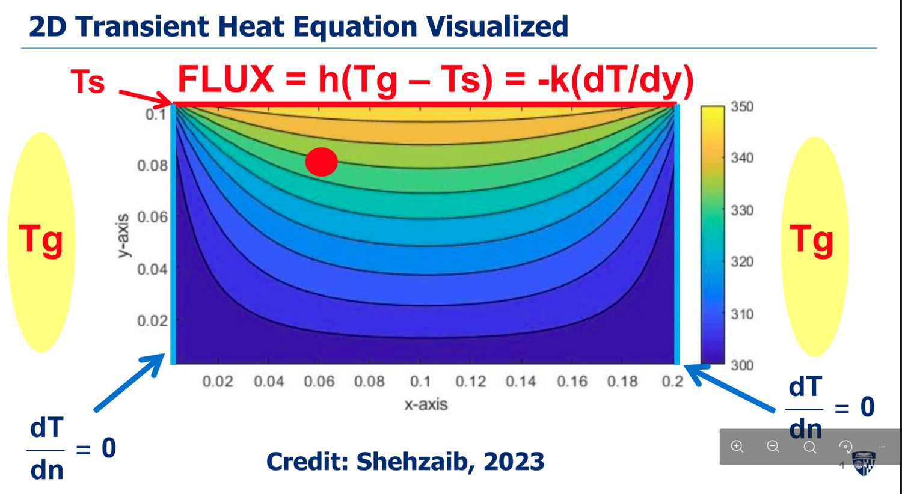
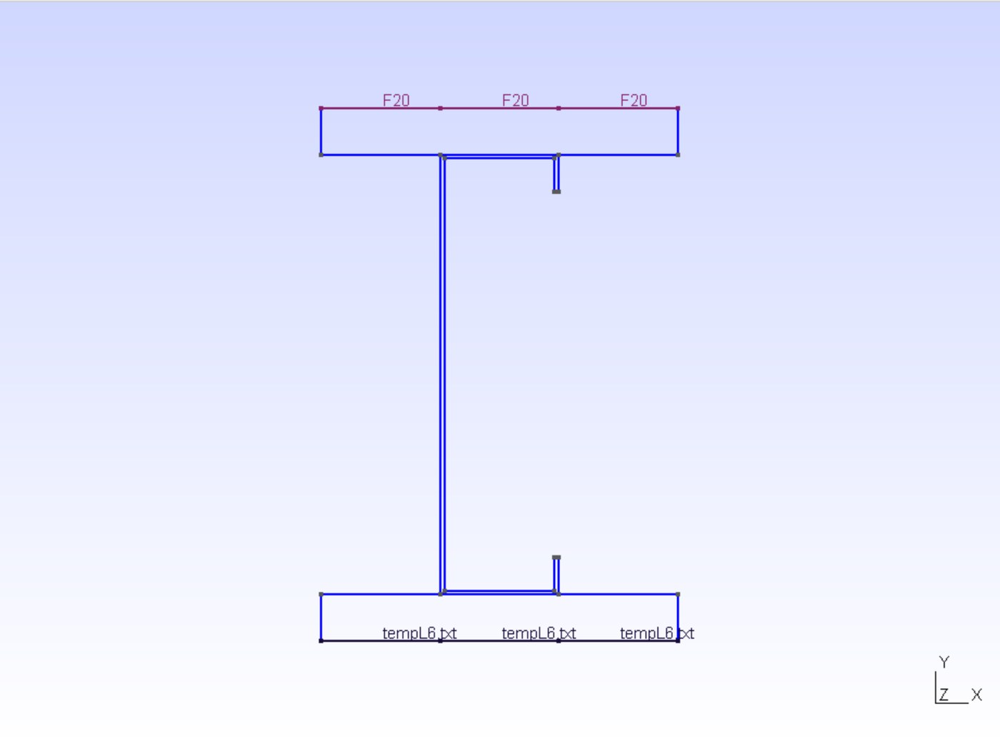
Just like in other FEA, the 2D model needs to be meshed. In SAFIR, 2D elements are best modeled with quadrilateral/rectangular mesh, especially since temperature grows in one direction. Using SAFIR's transfinite curves, I assigned 5 elements to the gypsum's vertical edges and 13 elements to the gypsum's horizontal edge to create 4 mm by 10 mm elements.
You may be wondering, why did we only model one stud and part of the gypsum board if there are several studs and longer boards on the actual wall? It's because in SAFIR, we can define an axis of symmetry across where we want to “mirror” the geometry (called RealSym). In addition, I need to assign voids (open cavities where heat passes through as radiation) so that the model knows these cavities are repeated and enclosed by other stud-gypsum interfaces not modeled. Otherwise, it appears as though the cavity has an open gap.
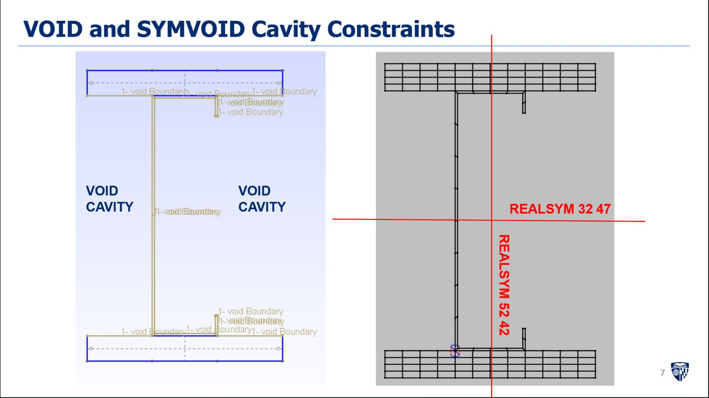
The SAFIR preprocessor delivers a .IN file that contains all this data as well as the intended time step and time range for the solver. I wanted to compare my results to the true experimental hot/cold flange temperature over time graphs, which ended at around 80 minutes. As a result, I made the range 7200 seconds and chose a reasonably small timestep of 8 seconds.
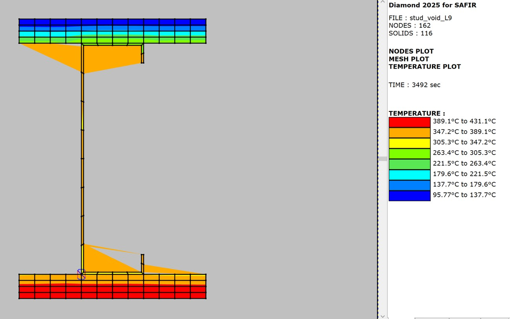
I tested my model at both the L6 and L9 gas temperature curves, and the maximum temperatures at the hot and cold flanges were accurate within ±10 C of the FE test performed by the lab's master's student. The shape of the graphs matches nicely for the hot flange, yet less so for the cold. However, both of our models significantly overestimated the maximum average measured temperatures. In conclusion, my model was able to predict temperature within about ±50 C of the true temperatures at the hot and cold regions.
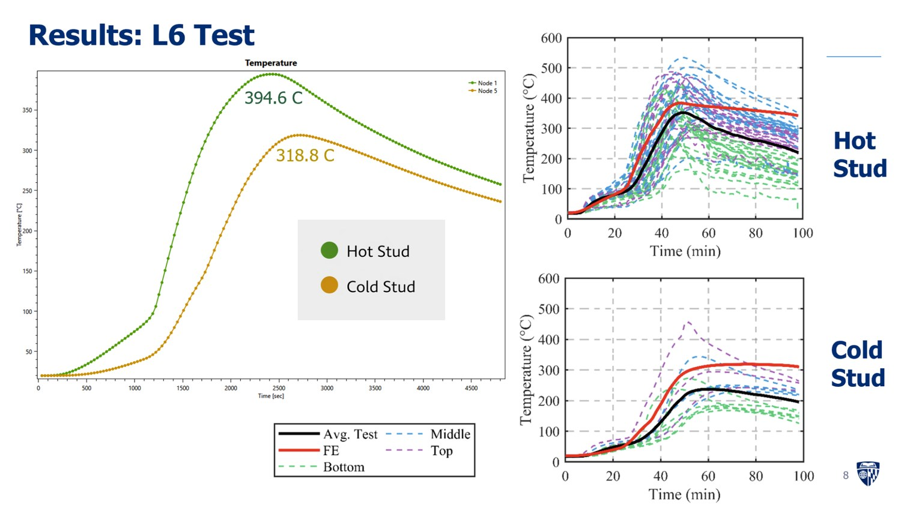
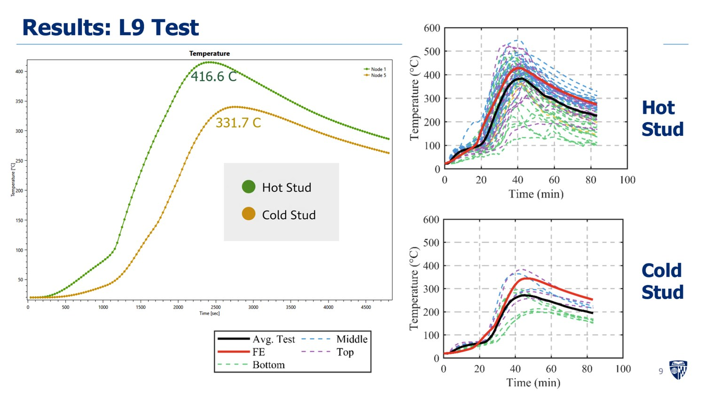
Parametric Analysis
Still, I wanted to take my analysis one step further. What would the temperature distribution look like if there were two layers of gypsum on either flange instead of one? What if the gas temperature curves were standard curves (i.e. known research of fires started by wood, in tunnels, in a furnace) instead of customized fires like those at L6 and L9?
For seeing the effect of added gypsum protection, I redesigned the geometry of the gypsum surfaces. The gas temperature frontier, void, and meshing specifications remained the same.
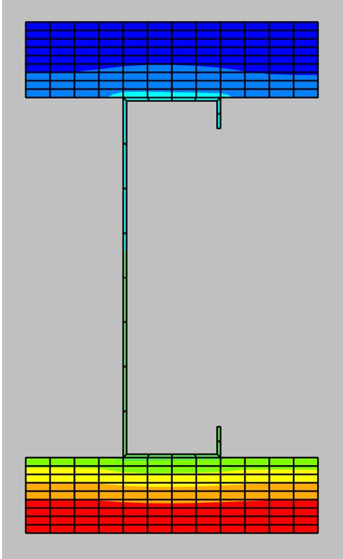
This new simulation showed that the double gypsum protection reduces maximum temperature by 200 C for both the hot and cold flanges. Crucially, the temperature grows seven times slower with two gypsum boards rather than one when looking at the linear region of both temperature-time graphs. These results hold true for both L6 and L9 tests.
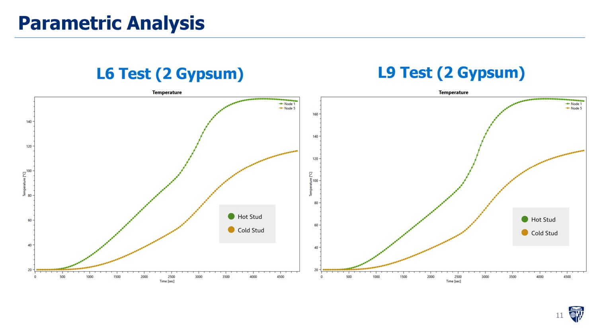
The next parameter change is to the fire frontier, with only one gypsum layer for protection. As opposed to referring to the gas temperature recordings in the compartments of the 10-story building, I set standard fire curve frontiers that represent fast growth and high temperatures. The resulting simulated curves show similarity in shape to the true standard fire curves themselves. This stud-gypsum setup is able to reduce temperature buildup and maximum temperature effectively in ISO 834 (standard cellulose/wood fire). However, it is significantly less effective with Hydrocarb (flammable liquids or gases), where the simulated and fire curve graphs are near identical, reaching a maximum of 1200 C as opposed to 700 C in ISO 834. RWS (road tunnel structures) experiences a similar trend as the Hydrocarb.
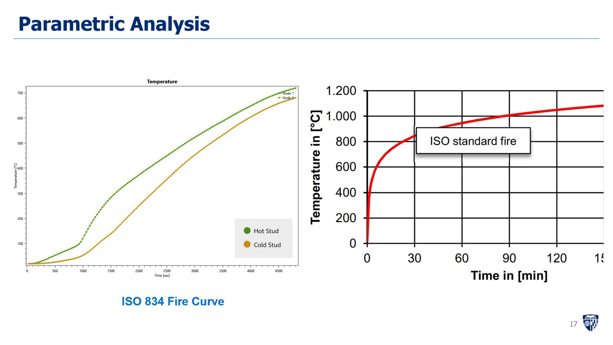
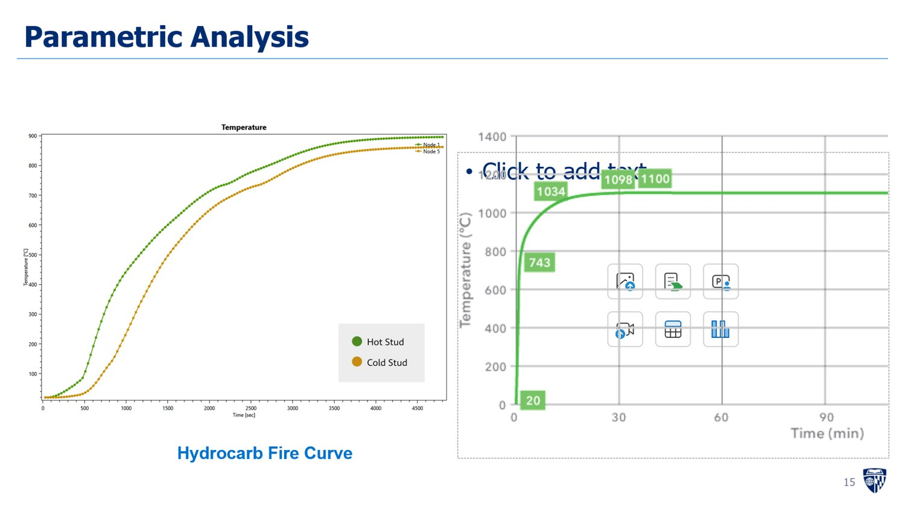
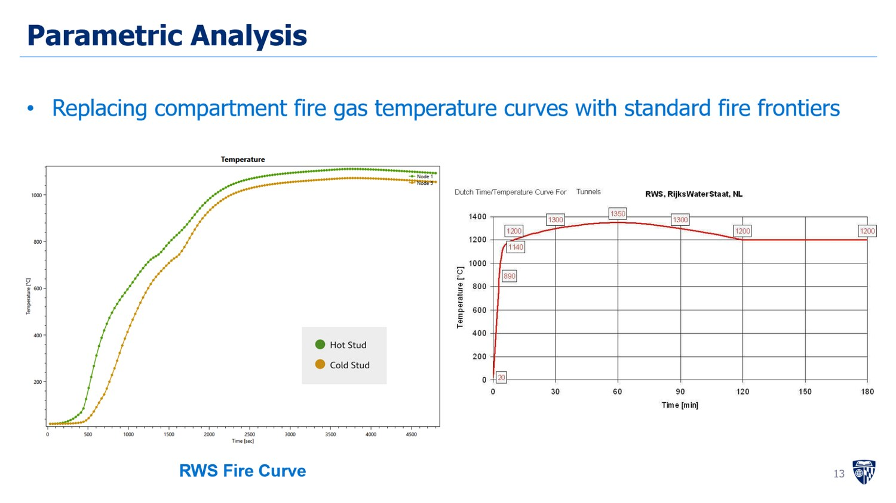
I ultimately presented my work to my PI and he credited me on the accuracy of and insights produced from this analysis. In fact, he pointed out that the model I created for the L6 test more accurately depicted the temperature than his master's student's initial model, in which there was an error. I am building off this research by developing 2D FE models for more geometries of stud-gypsum assemblies, in order to develop a physics model that can predict temperature without the need for time-consuming FEA!